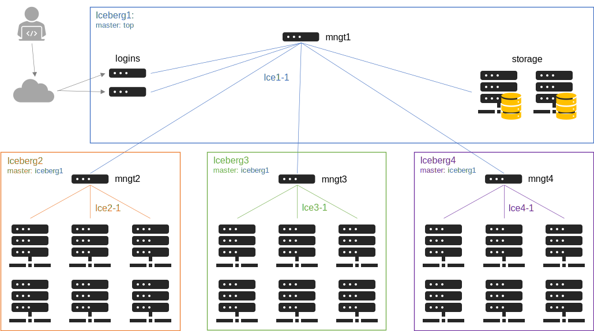
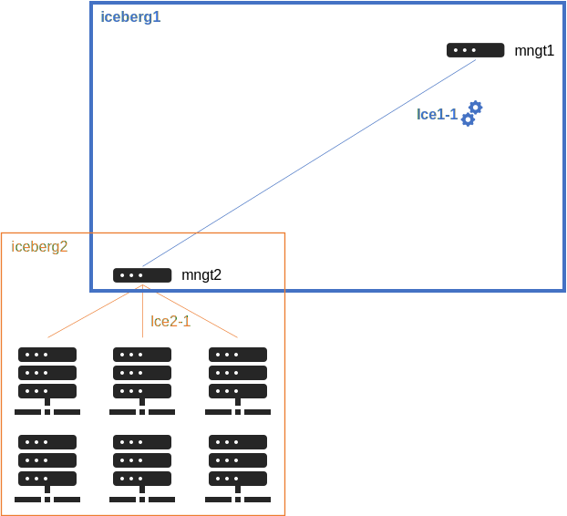
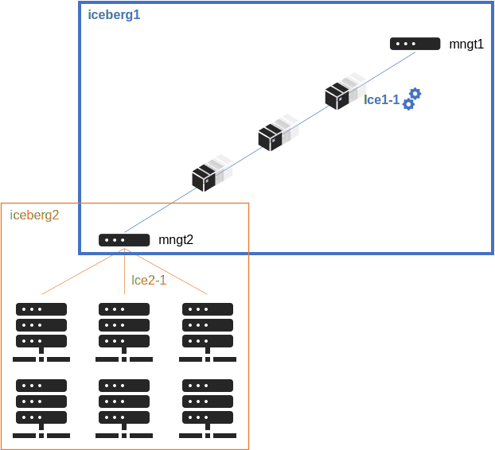
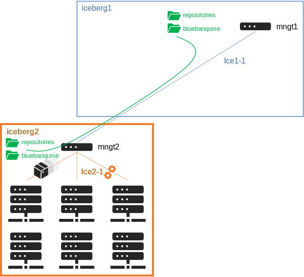

8. [Core] - Manage multiple icebergs¶
Now that the simple configuration has been tested and done, it is possible to extend the cluster, by activating the multiple icebergs mechanism.
Icebergs mechanism allows to split cluster into parts, in order to:
Distribute load over multiple managements nodes.
Isolate part of the cluster from the others, while keeping if needed an unified interconnect network.
It is important to understand what is an iceberg in BlueBanquise.
Note
An iceberg is also often called an island in High Performance Computing domain.
8.1. Iceberg elements¶
Each iceberg is composed of:
A set of dedicated management nodes (can be bare metal servers, VMs, containers, etc.).
Some hosts part of this iceberg, and managed by the iceberg management nodes.
Iceberg isolated management networks, called iceX-Y by default, with X the iceberg number (starting from 1).
An Ansible group, with all management nodes and hosts part of the iceberg.
Icebergs are connected together using a simple hierarchical pattern: an iceberg can be a top, meaning it is the top in the hierarchy, or be a standard iceberg, meaning it will refer to a master iceberg (which can be a top iceberg, or another standard iceberg if more than 2 levels).
The following schema summarize an example target architecture:

Few notes about this schema:
Icebergs managements can be connected to any administration networks.
Managements of a standard iceberg are expected to be connected to both administration network, i.e. on one of their internal iceberg administration network, but also on one of the administration network of their master iceberg (so here, one above, and one bellow).
Services will work as a chain. For example, time will come from the top iceberg (or an external source) and each time server will take as source the time server of its master iceberg.
And the following schema summarize scope of each iceberg for the following examples:
Note that this architecture is flexible, and can be adapted to create isolated icebergs (i.e. having multiple fully isolated clusters in the same BlueBanquise configuration).
Warning
Note also that using iceberg related groups, it is possible to define variables dedicated to each iceberg (for example, define a different time zone, a different domain name, etc.). However, and this is important, variables defined in group_vars/equipment_X (prefixed by ep_ and authentication_) should never be used in icebergs groups, i.e. group_vars/icebergX, as this is incompatible with the stack logic: some roles expect all the members of equipment_profile groups to have the same values for each ep_ and authentication_ parameters.
Note
As a physician, I start counting at 1 when speaking of physical things, and so icebergs are numbered at 1 by default. However, nothing prevents using 0 as a start point when activating icebergs mechanism.
We are going to split the target cluster of the main documentation into different icebergs.
Iceberg1 will be the top iceberg, and icebergs 2, 3 and 4 will be standard icebergs, with iceberg1 as master iceberg.
8.2. Configuring top iceberg¶
8.2.1. Understanding mechanism¶
By default, iceberg mechanism is deactivated, and so all hosts are considered member of iceberg1.
This automation is achieved by j2 variable j2_current_iceberg, in file internal/group_vars/all/j2_variables/icebergs.yml:
j2_current_iceberg: "{% if not icebergs_system %}{{ iceberg_naming+'1' }}{% else %}{{ group_names | select('match','^'+iceberg_naming+'[0-9]+') | list | unique | sort | first | join }}{% endif %}"
So to resume this code, assuming we are working on host c001 which is part of iceberg2 group:

- If icebergs_system is set to false
-> Then iceberg is iceberg_naming+’1’ = iceberg1.
- If icebergs_system is set to true
-> Then j2_current_iceberg will check groups the current hosts is member of (group_names), and look for a group with pattern iceberg_naming+’[0-9]+’, and use it to determine current iceberg.
Then, other values will be deduced from this:
j2_current_iceberg_number: "{{ j2_current_iceberg | replace(iceberg_naming,' ') | trim }}"
j2_current_iceberg_network: "{{ management_networks_naming + (j2_current_iceberg_number|string) }}"
j2_current_iceberg_number is simply the j2_current_iceberg without the “iceberg” string, so the iceberg number, here “2”.
j2_current_iceberg_network is the addition of the default network naming and the iceberg number, so here “ice2”.
Note also that 2 variables are here to simplify developments of templates:
j2_icebergs_groups_list: “{{ groups | select(‘match’,’^’+iceberg_naming+’[0-9]+’) | list }}”
j2_number_of_icebergs: “{{ groups | select(‘match’,’^’+iceberg_naming+’[0-9]+’) | list | length }}”
Variables names are self explaining these variables.
8.2.2. Enabling iceberg mechanism¶
Warning
Do not play any role from now, until hosts are in their iceberg group.
To activate icebergs mechanism, open file group_vars/all/general_settings/general.yml, and set icebergs_system to true.
8.2.3. Create iceberg 1¶
We now need to create the iceberg1 group, define its variables, and add hosts into it.
Create dedicated folder if absent:
mkdir /etc/bluebanquise/inventory/cluster/icebergs/
Then create file inventory/cluster/icebergs/iceberg1, and add the following content:
[iceberg1:vars]
iceberg_master = top
iceberg_level = 1
[iceberg1]
This will create an Ansible group called iceberg1, with 2 associated variables.
iceberg_master defines if the iceberg is a top, or a standard iceberg linked to a master.
iceberg_level defines the level of this iceberg in the services chain. This is for example used to calculate stratum value of time servers, etc.
Note
iceberg_level could be automatically calculated. However, having it as a variable allows the system administrator to tune it to desired ways.
Let’s check current groups status:
[root@mngt1 ~]# ansible-inventory --graph
@all:
...
|--@iceberg1:
|--@ungrouped:
[root@mngt1 ~]#
iceberg1 group has been created, and is empty. Now add management(s) and nodes of the current iceberg into it.
To do so, edit again file inventory/cluster/icebergs/iceberg1 and under [iceberg1] simply add hosts:
[iceberg1:vars]
iceberg_master = top
iceberg_level = 1
[iceberg1]
management1
login[1:2]
storage[1:6]
Note
As you can see, it is possible to add ranges of nodes, like in this example with login[1:2]. This is a different syntax than ClusterShell’s nodeset or SchedMD’s Slurm.
Check groups again:
[root@mngt1 ~]# ansible-inventory --graph
@all:
...
|--@iceberg1:
| |--management1
| |--login1
| |--login2
| |--storage1
| |--storage2
| |--storage3
| |--storage4
| |--storage5
| |--storage6
|--@ungrouped:
[root@mngt1 ~]#
And push this new configuration using your dedicated playbook for each already deployed hosts. It is possible to see what is going to be modified using –diff –check at ansible-playbook invocation.
There should not be major modifications in configuration for hosts of iceberg1.
8.2.4. Create iceberg 2¶
Create now a second iceberg, with iceberg1 as master.
Create file inventory/cluster/icebergs/iceberg2, with the following content:
[iceberg2:vars]
iceberg_master = iceberg1
iceberg_level = 2
[iceberg2]
This new iceberg is not a top iceberg, and so refer to its master, here iceberg1.
Configure a new management, called mngt2, that will be in charge of iceberg2. According to icebergs definition, mngt2 must be connected to both ice1-1 network and ice2-1 network.
For convenience, we create a dedicated folder in cluster directory to store all nodes related to each iceberg. We also move all current nodes into iceberg1 directory.
mkdir -p /etc/bluebanquise/inventory/cluster/nodes/iceberg1/
mkdir -p /etc/bluebanquise/inventory/cluster/nodes/iceberg2/
mv /etc/bluebanquise/inventory/cluster/*.yml /etc/bluebanquise/inventory/cluster/nodes/iceberg1/
A warning may be displayed during playbook execution for now, because nodes/iceberg2/ is still empty.
Now create mngt2 file dedicated file inventory/cluster/nodes/iceberg2/management.yml with the following content:
mg_managements:
children:
equipment_typeM:
hosts:
mngt2:
bmc:
name: bmngt2
ip4: 10.10.100.2
mac: 08:00:27:0d:41:97
network: ice1-1
network_interfaces:
- interface: enp0s8
ip4: 10.12.0.1
mac: 08:00:27:de:42:23
network: ice2-1
- interface: enp0s3
ip4: 10.10.0.2
mac: 08:00:27:de:41:21
network: ice1-1
This host is connected to both icebergs, and will be pushed from ice1-1 and act as a pusher (management) on ice2-1.
Warning
Two important things, related to network. First, BMC is connected to ice1-1, as mngt1 is in charge of deploying mngt2. Secondly, here, network_interface connected to network ice2-1 MUST BE THE FIRST in the list. This is key, as you need nodes to reach mngt2 to its main iceberg interface. Only mngt1 should need access to ice1-1 interface of mngt2, and the ssh_master role will ensure that Ansible from mngt1 use this one.
Add mngt2 to iceberg2, by editing inventory/cluster/icebergs/iceberg2 and adding mngt2 under [iceberg2]:
[iceberg2:vars]
iceberg_master = iceberg1
iceberg_level = 2
[iceberg2]
mngt2
Play again playbooks on mngt1, so mngt2 is added into dhcp, pxe, dns, hosts, etc. configuration files.
Note
Even if mngt2 is not part of iceberg1, it has been added to configuration files on mngt1, like any other nodes of iceberg1. All nodes part of group mg_managements and part of a sub iceberg group are automatically added, as they also need to be deployed from this iceberg, like any other nodes.
Once done, use standard procedure to deploy OS on mngt2 from mngt1 (bootset, etc).
Now, few steps has to be followed in a specific order to deploy configuration on mngt2.
8.2.5. Deploy sub management configuration¶
Sub managements (here mngt2) need to have locally access to the repositories and BlueBanquise inventory that are currently stored on top managements (here mngt1).
There are multiple strategy to achieve that. Two are proposed here:
using an NFS share (if good network bandwidth and small storage)
using SyncThings tool (good if you have enough storage)
8.2.5.1. Using NFS¶
We will ensure that mngt2 mount over nfs the repositories and the BlueBanquise inventory from mngt1. This to be able to install packages, but also act as a repository server for its iceberg, and be able to deploy the configuration on its iceberg nodes.
We need to ensure mngt2 is part of a group that will mount the repositories and bluebanquise, in nfs.yml. By default, this group is called secondary_managements.
Create file inventory/cluster/groups/secondary_managements with the following content:
[secondary_managements]
mngt2
Then ensure in file inventory/group_vars/all/general_settings/nfs.yml you have at least these two exports:
nfs:
...
bluebanquise:
mount: /etc/bluebanquise
export: /etc/bluebanquise
server: mngt1
clients_groups:
- secondary_managements
take_over_network: ice1-1
export_arguments: ro,no_root_squash,sync
mount_arguments: ro,intr,nfsvers=4.2,bg
repositories:
mount: /var/www/html/repositories
export: /var/www/html/repositories
server: mngt1
clients_groups:
- secondary_managements
take_over_network: ice1-1
export_arguments: ro,no_root_squash,sync
mount_arguments: ro,intr,rsize=32768,wsize=32768,nfsvers=4.2,bg
So mngt1 will export both folders, and members of secondary_managements (so mngt2) will mount it.
Note
All is set to read only here (ro). It is up to you to switch to read write if needed.
If you just added these new nfs exports, play the role nfs_server on mngt1 and check that mngt1 now export these foldes, using showmount -e mngt1 command.
Next, we will need a playbook for mngt2. Copy current mngt1 dedicated playbook:
- ..note ::
We assume here mngt1.yml playbook exist. You may have used another name for it: managements.yml, management1.yml, etc. Please adapt these instructions to your own environment.
cp /etc/bluebanquise/playbooks/mngt1.yml /etc/bluebanquise/playbooks/mngt2.yml
And change target host inside to match mngt2.
From now, few steps need to be done in a very strict order. We are going to force mngt2 to be part of iceberg1 for few commands, in order to be able to bootstrap it. To do so, we will execute the mngt2.yml playbook, with an extra variable, that will force j2_current_iceberg to be iceberg1.
We need first mngt2 to be able to install packages, and so to use mngt1 as repositories server.
Deploy repositories_client role, by forcing mngt2 to be temporary part of iceberg1:
mngt1# ansible-playbook /etc/bluebanquise/playbooks/mngt2.yml -t repositories_client --extra-vars j2_current_iceberg=iceberg1
Packages can now be downloaded from mngt1 to mngt2 and installed on mngt2.
Then deploy nfs_client role, and repositories_server role, so that mngt2 can get repositories locally and distribute them on iceberg2:
mngt1# ansible-playbook /etc/bluebanquise/playbooks/mngt2.yml -t nfs_client,repositories_server --extra-vars j2_current_iceberg=iceberg1
/var/www/html/repositories and /etc/bluebanquise from mngt1 are now mounted on mngt2, and httpd server is running on mngt2.

8.2.5.2. Using SyncThings¶
8.2.5.3. Deploy configuration¶
Now, mngt2 can be autonomous and do not need to be part of iceberg1. Deploy the whole configuration on it:
mngt1# ansible-playbook /etc/bluebanquise/playbooks/mngt2.yml
From now, mngt2 act as iceberg2 management, and can provide packages to its pool of client nodes.
And proceed as usual to add more hosts into iceberg2 and deploy them, this time from mngt2.
Redo this same process for each additional island.
8.2.6. Interconnect and job scheduler (HPC only)¶
Now that your icebergs are up and running comes the question of the interconnect (if exist) and the job scheduler (by default Slurm). Same question can be made for the storage: you may need all nodes to reach a network FS (Lustre, BeeGFS, etc.).

For storage, it should be straightforward: once the storage is online and reachable over the interconnect, all nodes can mount it.
The Slurm setup is a little bit more complex. You will need a unified network to allow your nodes to be able to reach the same Slurm controller, mostly running on the mngt1 server.
But you will also need to ensure direct hostnames resolution of all computes nodes is done on the interconnect, and not on the internet. Why? Simply because when parallel computations take places, Slurm will provide to the instance nodes hostnames as target, and so if nodes need to reach each other through ethernet, nodes from one iceberg will not be able to reach nodes from other icebergs, and so parallel computations will not initialize.
Example: user job is asking for 100 nodes, the whole cluster is free, and each iceberg contains 80 nodes. Slurm will allocate 80 nodes from iceberg1, lets say c[001-080] and 20 nodes from iceberg2, c[081-100]. The final mpirun command will receive as hosts target c[001-100]. c001 will be able to communicate with c002, but not with c081, as iceberg ethernet networks are isolated. But if c081 resolves to c081 over the interconnect network, then since this network is unified, c001 will be able to reach c081 and initialize MPI run.
Note
It is possible to set routing between icebergs over ethernet, but this is not in the scope of this documentation.
To achieve direct computes hosts resolution over interconnect, ensure the interconnect network interface is first in the network_interface list of each compute node, which is the preferred network.
For example:
hosts:
c001:
bmc:
name: bc001
ip4: 10.2.103.1
mac: 08:00:27:0d:f8:a5
network: ice2-1
network_interfaces:
- interface: enp0s3
ip4: 10.2.3.1
mac: 08:00:27:0d:f8:a6
network: ice2-1
- interface: ib0
ip4: 10.20.3.1
network: interconnect-1
Becomes:
hosts:
c001:
bmc:
name: bc001
ip4: 10.2.103.1
mac: 08:00:27:0d:f8:a5
network: ice2-1
network_interfaces:
- interface: ib0
ip4: 10.20.3.1
network: interconnect-1
- interface: enp0s3
ip4: 10.2.3.1
mac: 08:00:27:0d:f8:a6
network: ice2-1
Using this, all nodes will now be able to communicate directly over the interconnect.
Note
Having interconnect here as direct resolution is not an issue to deploy configuration with Ansible. By default, the ss_master role force the ssh from a management to targets to be done on the first management network in the target network_interfaces list. In this example, a ping c001 will ping the ib0 interface connected to the ib0 network, so 10.20.3.1, but an ssh c001 will connect to c001 through interface enp0s3 connected to the ice2-1 network, so 10.2.3.1.